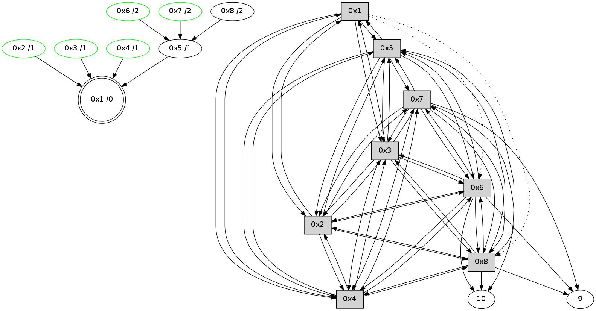

>> << IDX [start] -100 -25 -5 +0 +5 +25 +100 [355.004484892]
 Previous packets
----------------------------------------------------------------------
350.055226 beacon01(11f6) #0 coord=01,02,03,04,05,06,07,08,0a,09 cycle=688.0ms assoc
-- color-indic=0 64 cb 1e
350.065406 beacon02(11f6) #0 coord=01,02,03,04,05,06,07,08,0a,09 cycle=688.0ms assoc 64 58 2f
350.075362 beacon03(11f6) #0 coord=01,02,03,04,05,06,07,08,0a,09 cycle=688.0ms assoc 64 22 62
350.085362 beacon04(11f6) #0 coord=01,02,03,04,05,06,07,08,0a,09 cycle=688.0ms assoc 64 55 88
350.095361 beacon05(11f6) #0 coord=01,02,03,04,05,06,07,08,0a,09 cycle=688.0ms assoc 64 2f c5
350.105362 beacon06(11f6) #0 coord=01,02,03,04,05,06,07,08,0a,09 cycle=688.0ms assoc 64 a1 12
350.115362 beacon07(11f6) #0 coord=01,02,03,04,05,06,07,08,0a,09 cycle=688.0ms assoc 64 db 5f
350.125367 beacon08(11f6) #0 coord=01,02,03,04,05,06,07,08,0a,09 cycle=688.0ms assoc 64 5e ce
350.200929 [Hello(2): seq=169 sym=1,7,5,3,8,4,6 sysInfo= stat=1:8,0,8,0/7:15,0,8,2/5:0,0,8,0/3:0,0,8,3/8:1,0,7,0/4:0,0,7,4/6:4,0,6,4]
350.236237 [Hello(4): seq=169 sym=1,2,5,6,3,8,7 sysInfo= stat=1:8,0,8,0/2:0,0,8,4/5:2,0,8,0/6:10,0,7,4/3:4,0,7,3/8:2,0,7,0/7:5,0,8,2]
350.253137 [Hello(7): seq=169 sym=10,5,6,8,3,2,4,9 sysInfo= stat=10:15,0,6,3/5:8,0,8,0/6:4,0,6,4/8:4,0,7,0/3:11,0,8,4/2:15,0,8,3/4:9,0,5,2/9:4,0,7,1]
350.269864 [Hello(3): seq=169 sym=1,2,7,5,6,8,4 sysInfo= stat=1:9,0,8,0/2:0,0,8,4/7:1,0,8,2/5:0,0,7,0/6:10,0,7,4/8:1,0,7,0/4:3,0,7,4]
350.273628 [Hello(6): seq=169 sym=10,7,5,3,8,4,2,9 sysInfo= stat=10:0,0,5,3/7:9,0,8,3/5:10,0,8,0/3:8,0,8,4/8:1,0,7,0/4:11,0,5,3/2:0,0,8,3/9:12,0,7,1]
350.283256 [Hello(5): seq=169 sym=1,2,7,6,3,8,4 sysInfo= stat=1:9,0,8,0/2:15,0,8,4/7:4,0,8,2/6:13,0,6,4/3:3,0,8,4/8:1,0,7,0/4:3,0,7,3]
350.304264 [Hello(8): seq=169 sym=2,7,5,6,3,4,10 sysInfo= stat=2:1,0,8,4/7:10,0,8,3/5:8,0,7,0/6:5,0,6,4/3:4,0,8,4/4:0,0,5,3/10:8,0,5,3]
----------------------------------------------------------------------
350.843361 beacon01(11f6) #0 coord=01,02,03,04,05,06,07,08,0a,09 cycle=688.0ms assoc
-- color-indic=0 64 77 1b
350.853541 beacon02(11f6) #0 coord=01,02,03,04,05,06,07,08,0a,09 cycle=688.0ms assoc 64 e4 2a
350.863496 beacon03(11f6) #0 coord=01,02,03,04,05,06,07,08,0a,09 cycle=688.0ms assoc 64 9e 67
350.873497 beacon04(11f6) #0 coord=01,02,03,04,05,06,07,08,0a,09 cycle=688.0ms assoc 64 e9 8d
350.883498 beacon05(11f6) #0 coord=01,02,03,04,05,06,07,08,0a,09 cycle=688.0ms assoc 64 93 c0
350.893498 beacon06(11f6) #0 coord=01,02,03,04,05,06,07,08,0a,09 cycle=688.0ms assoc 64 1d 17
350.903497 beacon07(11f6) #0 coord=01,02,03,04,05,06,07,08,0a,09 cycle=688.0ms assoc 64 67 5a
350.913501 beacon08(11f6) #0 coord=01,02,03,04,05,06,07,08,0a,09 cycle=688.0ms assoc 64 e2 cb
351.024529 [Hello(1): seq=170 sym=5,3,2,4 asym=8,6 sysInfo= stat=5:1,0,8,0/3:5,0,8,4/2:15,0,8,4/4:3,0,7,4/8:4,0,7,0/6:0,0,6,4]
----------------------------------------------------------------------
351.631499 beacon01(11f6) #0 coord=01,02,03,04,05,06,07,08,0a,09 cycle=688.0ms assoc
-- color-indic=0 64 b3 15
351.641649 beacon02(11f6) #0 coord=01,02,03,04,05,06,07,08,0a,09 cycle=688.0ms assoc 64 20 24
351.651634 beacon03(11f6) #0 coord=01,02,03,04,05,06,07,08,0a,09 cycle=688.0ms assoc 64 5a 69
351.661635 beacon04(11f6) #0 coord=01,02,03,04,05,06,07,08,0a,09 cycle=688.0ms assoc 64 2d 83
351.671635 beacon05(11f6) #0 coord=01,02,03,04,05,06,07,08,0a,09 cycle=688.0ms assoc 64 57 ce
351.681636 beacon06(11f6) #0 coord=01,02,03,04,05,06,07,08,0a,09 cycle=688.0ms assoc 64 d9 19
351.691636 beacon07(11f6) #0 coord=01,02,03,04,05,06,07,08,0a,09 cycle=688.0ms assoc 64 a3 54
351.701640 beacon08(11f6) #0 coord=01,02,03,04,05,06,07,08,0a,09 cycle=688.0ms assoc 64 26 c5
351.760562 [Hello(2): seq=170 sym=1,7,5,3,8,4,6 sysInfo= stat=1:9,0,8,0/7:0,0,8,2/5:1,0,8,0/3:1,0,8,3/8:2,0,7,0/4:1,0,7,4/6:5,0,6,4]
351.767521 [Hello(3): seq=170 sym=1,2,7,5,6,8,4 sysInfo= stat=1:10,0,8,0/2:0,0,8,4/7:1,0,8,2/5:1,0,7,0/6:11,0,7,4/8:2,0,7,0/4:3,0,7,4]
351.833155 [Hello(7): seq=170 sym=10,5,6,8,3,2,4,9 sysInfo= stat=10:1,0,6,3/5:9,0,8,0/6:5,0,6,4/8:5,0,7,0/3:12,0,8,4/2:0,0,8,3/4:9,0,5,2/9:5,0,7,1]
351.837017 [Hello(4): seq=170 sym=1,2,5,6,3,8,7 sysInfo= stat=1:9,0,8,0/2:1,0,8,4/5:3,0,8,0/6:11,0,7,4/3:6,0,7,3/8:3,0,7,0/7:6,0,8,2]
351.860192 [Hello(8): seq=170 sym=2,7,5,6,3,4,10,9 sysInfo= stat=2:2,0,8,4/7:11,0,8,3/5:8,0,7,0/6:5,0,6,4/3:5,0,8,4/4:1,0,5,3/10:9,0,5,3/9:0,0,0,0]
351.868849 [Hello(5): seq=170 sym=1,2,7,6,3,8,4 sysInfo= stat=1:10,0,8,0/2:0,0,8,4/7:5,0,8,2/6:13,0,6,4/3:4,0,8,4/8:3,0,7,0/4:4,0,7,3]
351.872856 [Hello(6): seq=170 sym=10,7,5,3,8,4,2,9 sysInfo= stat=10:1,0,5,3/7:10,0,8,3/5:11,0,8,0/3:9,0,8,4/8:3,0,7,0/4:12,0,5,3/2:1,0,8,3/9:13,0,7,1]
----------------------------------------------------------------------
352.419776 beacon01(11f6) #0 coord=01,02,03,04,05,06,07,08,0a,09 cycle=688.0ms assoc
-- color-indic=0 64 0f 10
352.429928 beacon02(11f6) #0 coord=01,02,03,04,05,06,07,08,0a,09 cycle=688.0ms assoc 64 9c 21
352.439912 beacon03(11f6) #0 coord=01,02,03,04,05,06,07,08,0a,09 cycle=688.0ms assoc 64 e6 6c
352.449911 beacon04(11f6) #0 coord=01,02,03,04,05,06,07,08,0a,09 cycle=688.0ms assoc 64 91 86
352.459911 beacon05(11f6) #0 coord=01,02,03,04,05,06,07,08,0a,09 cycle=688.0ms assoc 64 eb cb
352.469912 beacon06(11f6) #0 coord=01,02,03,04,05,06,07,08,0a,09 cycle=688.0ms assoc 64 65 1c
352.479912 beacon07(11f6) #0 coord=01,02,03,04,05,06,07,08,0a,09 cycle=688.0ms assoc 64 1f 51
352.489917 beacon08(11f6) #0 coord=01,02,03,04,05,06,07,08,0a,09 cycle=688.0ms assoc 64 9a c0
352.617218 [TreeStatus(8)-.->1 #0.8 new-neigh child=2]
352.655890 [TreeStatus(5)-.->1 #0.8 new-neigh child=4]
352.666273 [Hello(1): seq=171 sym=5,3,2,4 asym=8,6 sysInfo= stat=5:2,0,8,1/3:6,0,8,4/2:0,0,8,4/4:4,0,7,4/8:5,0,7,1/6:1,0,6,4]
352.669434 [STC(1) #0.9 new-neigh,to-color d=0]
----------------------------------------------------------------------
353.207913 beacon01(11f6) #0 coord=01,02,03,04,05,06,07,08,0a,09 cycle=688.0ms assoc
-- color-indic=0 64 db 25
353.218075 beacon02(11f6) #0 coord=01,02,03,04,05,06,07,08,0a,09 cycle=688.0ms assoc 64 48 14
353.228049 beacon03(11f6) #0 coord=01,02,03,04,05,06,07,08,0a,09 cycle=688.0ms assoc 64 32 59
353.238049 beacon04(11f6) #0 coord=01,02,03,04,05,06,07,08,0a,09 cycle=688.0ms assoc 64 45 b3
353.248049 beacon05(11f6) #0 coord=01,02,03,04,05,06,07,08,0a,09 cycle=688.0ms assoc 64 3f fe
353.258049 beacon06(11f6) #0 coord=01,02,03,04,05,06,07,08,0a,09 cycle=688.0ms assoc 64 b1 29
353.268050 beacon07(11f6) #0 coord=01,02,03,04,05,06,07,08,0a,09 cycle=688.0ms assoc 64 cb 64
353.278053 beacon08(11f6) #0 coord=01,02,03,04,05,06,07,08,0a,09 cycle=688.0ms assoc 64 4e f5
353.328939 [Hello(7): seq=171 sym=10,5,6,8,3,2,4,9 sysInfo= stat=10:1,0,6,3/5:10,0,8,1/6:6,0,6,4/8:6,0,7,1/3:12,0,8,4/2:0,0,8,3/4:10,0,5,2/9:5,0,7,2]
353.367275 [Hello(6): seq=171 sym=10,7,5,3,8,4,2,9 sysInfo= stat=10:1,0,5,3/7:11,0,8,3/5:11,0,8,1/3:9,0,8,4/8:3,0,7,1/4:12,0,5,3/2:1,0,8,3/9:13,0,7,2]
353.369850 [Hello(8): seq=171 sym=2,7,5,6,3,4,10,9 sysInfo= stat=2:2,0,8,4/7:12,0,8,3/5:9,0,7,1/6:6,0,6,4/3:5,0,8,4/4:1,0,5,3/10:9,0,5,3/9:0,0,0,1]
353.405759 [Hello(3): seq=171 sym=1,2,7,5,6,8,4 sysInfo= stat=1:11,0,9,0/2:0,0,8,4/7:3,0,8,2/5:2,0,7,1/6:13,0,7,4/8:4,0,7,1/4:4,0,7,4]
353.409591 [STC(3)->1 #0.9 new-neigh,stable,to-color d=1]
353.410848 [Hello(2): seq=171 sym=1,7,5,3,8,4,6 sysInfo= stat=1:10,0,9,0/7:2,0,8,2/5:2,0,8,1/3:2,0,8,3/8:4,0,7,1/4:2,0,7,4/6:7,0,6,4]
353.414247 [Hello(5): seq=171 sym=1,2,7,6,3,8,4 sysInfo= stat=1:11,0,9,0/2:0,0,8,4/7:6,0,8,2/6:15,0,6,4/3:5,0,8,4/8:4,0,7,1/4:4,0,7,3]
353.416690 [Hello(4): seq=171 sym=1,2,5,6,3,8,7 sysInfo= stat=1:10,0,9,0/2:2,0,8,4/5:4,0,8,1/6:13,0,7,4/3:7,0,8,3/8:5,0,7,1/7:8,0,8,2]
353.419331 [STC(2)->1 #0.9 new-neigh,stable,to-color d=1]
353.420972 [TreeStatus(2)-.->1 #0.9 new-neigh,stable child=1]
353.422114 [STC(4)->1 #0.9 new-neigh,stable,to-color d=1]
353.424383 [TreeStatus(4)-.->1 #0.9 new-neigh,stable child=1]
353.431289 [STC(5)->1 #0.9 new-neigh,to-color d=1]
----------------------------------------------------------------------
353.996050 beacon01(11f6) #0 coord=01,02,03,04,05,06,07,08,0a,09 cycle=688.0ms assoc
-- color-indic=0 64 67 20
354.006226 beacon02(11f6) #0 coord=01,02,03,04,05,06,07,08,0a,09 cycle=688.0ms assoc 64 f4 11
354.016185 beacon03(11f6) #0 coord=01,02,03,04,05,06,07,08,0a,09 cycle=688.0ms assoc 64 8e 5c
354.026186 beacon04(11f6) #0 coord=01,02,03,04,05,06,07,08,0a,09 cycle=688.0ms assoc 64 f9 b6
354.036187 beacon05(11f6) #0 coord=01,02,03,04,05,06,07,08,0a,09 cycle=688.0ms assoc 64 83 fb
354.046187 beacon06(11f6) #0 coord=01,02,03,04,05,06,07,08,0a,09 cycle=688.0ms assoc 64 0d 2c
354.056186 beacon07(11f6) #0 coord=01,02,03,04,05,06,07,08,0a,09 cycle=688.0ms assoc 64 77 61
354.066190 beacon08(11f6) #0 coord=01,02,03,04,05,06,07,08,0a,09 cycle=688.0ms assoc 64 f2 f0
354.138979 [Hello(1): seq=172 sym=5,3,2,4 asym=8,6 sysInfo= stat=5:2,0,9,1/3:7,0,9,5/2:1,0,9,5/4:5,0,8,5/8:6,0,7,1/6:2,0,6,4]
354.143369 [STC(6)->5-.->1 #0.9 new-neigh,stable,to-color d=2]
354.145316 [TreeStatus(6)-.->1 #0.9 new-neigh,stable child=1]
354.172420 [STC(7)->5-.->1 #0.9 new-neigh,stable,to-color d=2]
354.175321 [TreeStatus(7)-.->1 #0.9 new-neigh,stable child=2]
354.208525 [STC(8)->5-.->1 #0.9 new-neigh,to-color d=2]
----------------------------------------------------------------------
354.784186 beacon01(11f6) #0 coord=01,02,03,04,05,06,07,08,0a,09 cycle=688.0ms assoc
-- color-indic=0 64 a3 2e
354.794347 beacon02(11f6) #0 coord=01,02,03,04,05,06,07,08,0a,09 cycle=688.0ms assoc 64 30 1f
354.804320 beacon03(11f6) #0 coord=01,02,03,04,05,06,07,08,0a,09 cycle=688.0ms assoc 64 4a 52
354.814321 beacon04(11f6) #0 coord=01,02,03,04,05,06,07,08,0a,09 cycle=688.0ms assoc 64 3d b8
354.824321 beacon05(11f6) #0 coord=01,02,03,04,05,06,07,08,0a,09 cycle=688.0ms assoc 64 47 f5
354.844322 beacon07(11f6) #0 coord=01,02,03,04,05,06,07,08,0a,09 cycle=688.0ms assoc 64 b3 6f
354.854327 beacon08(11f6) #0 coord=01,02,03,04,05,06,07,08,0a,09 cycle=688.0ms assoc 64 36 fe
354.926481 [Hello(7): seq=172 sym=10,5,6,8,3,2,4,9 sysInfo= stat=10:2,0,7,4/5:11,0,9,1/6:7,0,7,5/8:7,0,8,1/3:13,0,9,4/2:0,0,9,4/4:11,0,5,3/9:5,0,8,2]
354.973200 [Hello(3): seq=172 sym=1,2,7,5,6,8,4 sysInfo= stat=1:12,0,9,0/2:1,0,9,5/7:4,0,9,3/5:2,0,8,1/6:13,0,8,5/8:4,0,8,1/4:5,0,8,5]
354.998831 [Hello(2): seq=172 sym=1,7,5,3,8,4,6 sysInfo= stat=1:11,0,9,0/7:3,0,9,3/5:2,0,9,1/3:3,0,8,3/8:4,0,8,1/4:2,0,8,5/6:7,0,7,5]